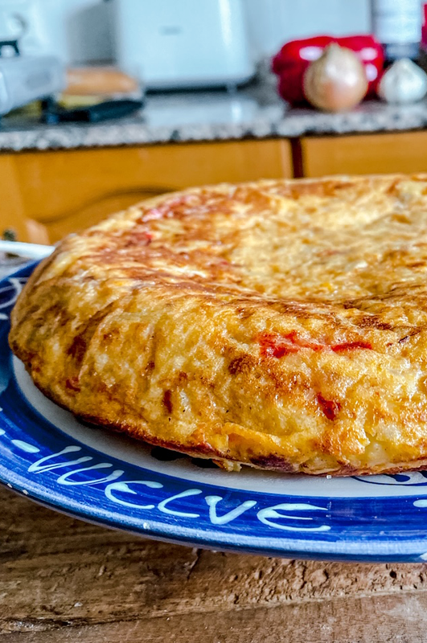
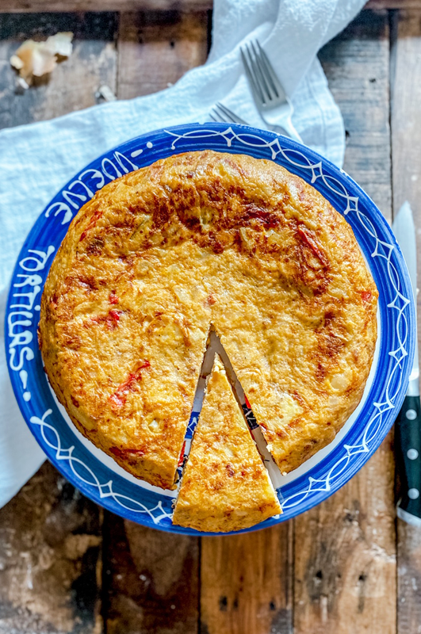

Spanish Tortilla De Patatas Recipe


⌛ 35 Minutes
Source = Spain On A Fork
Description
Tortilla de Patatas, also known as Spanish Omelette or tortilla de papas, is an easy Spanish recipe made with potatoes, onion, eggs, salt, and oil. According to the book "Culinaria Spain," the tortilla de patatas has been around since at least the late 1500s, when it was mentioned in a notebook belonging to the head chef for Kings Philip III and Philip IV of Spain. Similar to a quiche, a tortilla can be served warm or cold and at any time of the day. You can find them on menus in nearly every restaurant and cafe throughout Spain. Without further ado, here is the recipe!
Ingredients
- 1/3 cup extra virgin olive oil
- 2 yukon gold potatoes
- 1 red bell pepper
- 1 large onion
- 4 cloves garlic
- 1/2 tsp sweet smoked Spanish paprika
- 6 organic eggs
- Sea salt
- Black pepper
Steps
- Cut 2 medium sized yukon gold potatoes into small pieces. This can be done by cutting ach potato in half, then each half in half to end up with 4 evenly sized quarters. Cut each quarter into 3 pieces and into 1/4 inch thick slices,
- Thinly slice 1 large onion beofore finely mincing 4 cloves of garLic. Cut 1 red bell pepper into 2 inch long by a 1/4 inch thick strips, and finally crack 6 eggs into a bowl, seasoning them with the sea salt & black pepper. Whisk until they are well combined
- Heat up a large frying pan with medium-high heat and add in 1/3 cup extra virgin olive oil. After 2 minutes add in the pieces of bell pepper and the sliced onions, mix them with the olive oil and then once 3 minutes pass and the onions are translucent, add in your potatoes, and continue to mix so that all of the pieces of potato are coated in the olive oil. Mix everything occasionally while it is cooking.
- After about 15 minutes, add in the minced garlic, 1/2 tsp sweet smoked paprika and season everything with sea salt & black pepper. Once again, mix everything together until it is well combined.
- Remove the pan from the heat and transfer the mixture into the bowl with the eggs, before mixing things together until they are well combined
- Using the same pan, heat it with a low to low-medium heat and add the potato and egg mixture into the pan. Spread it around so it's all in an even layer, then after about 2 minutes run a spatula through the outer edges of the omelette to ensure that it's not sticking to the pan.
- After about 5 minutes, grab a plate that is roughly the same size as the pan and place it over the omelette. Place one hand over the plate while you flip the pan with the other hand, slide the uncooked part of the omelette back into the pan, all while using the back of a spatula to compact the tortilla from the outer edge towards the centre. This gives it that classic rounded edge.
- After another 5 minutes remove the pan from the heat and slide the tortilla into a serving dish. Enjoy!